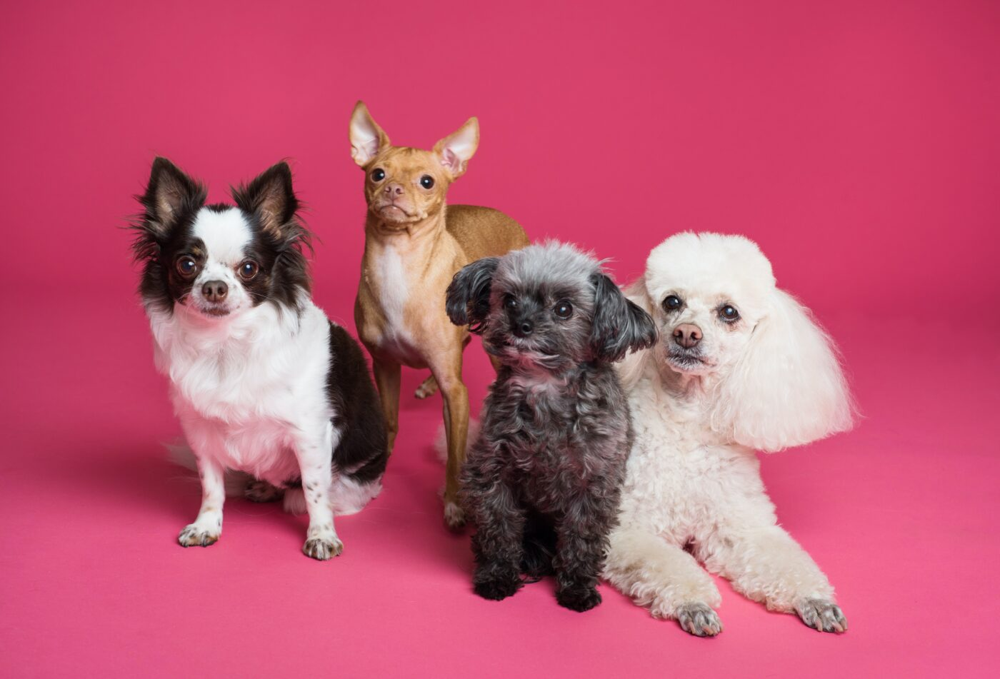
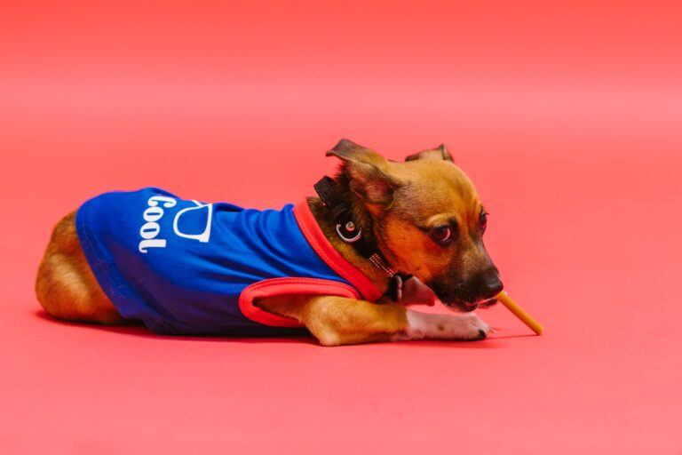

When it comes to naming your dog, you just know when the name sounds right. Your dog just is that name. Of course, with an estimated 48,255,413 dog households in the U.S. alone, odds are pretty high your pup shares a name with a few others (if not way more.) Rover.com used insights from their database of over one million pet parents to determine the most popular dog names in 2021. From pop culture inspirations to favorite foods to “people names,” here are all the top names for dogs this year.
Odds are you have or know a dog with one of these 10 top names:
Not that any dog or person needs a gender-specific name, but when it comes to female dogs, these names are most used:
As for male dogs, you’ll encounter many of these guys:
Interestingly, several dogs received pandemic-inspired names like Fauci, Pfizer, Vax, and Dolly Parton in 2021. The latter is because the country singer donated a ton of money to help fund vaccine efforts.
The Tokyo Olympics also gave pet parents some ideas, with the top athlete inspired name being Katie, followed by Tom, Naomi, Simone, and Suni.
Of course, many dogs get their names from bands and musicians, and 2021 saw a 32% increase in BTS (the K-Pop group) inspired dog names. Most popular are Suga (trending up 113%,) Kim, V, and Jin. For some reason, despite her new album release, the names Taylor and Taylor Swift are less common this year.
In the film and TV realm, the Friends reunion got people talking apparently, and Phoebe Buffay is a popular name this year. Janice is also up 138% from last. And, for those of you familiar with Disney+’s The Mandalorian, Grogu became a popular name because of the Star Wars spinoff.
And yes, of course, there are dogs actually named Bitcoin now. Up from previous years as well are the names Siri and Doge.
Food names will always be in style for pets, and 2021 proved no different. In this plant-based era, the names Tofu, Almond, and Beans are popular. Still, meat names will always be common, and Bacon, Brisket, Ham, Pork Chop, and Beef are the most popular in this category.
Also trending up according to Rover’s stats are breakfast-themed names. Dogs named Eggo are up 106% from last year. Others are called Toast, Cappucino, Waffle, and Bagel.
Dog owners are more likely to pick Marijuana inspired names than cat owners. According to Rover, the name Reefer is up 763% this year. Alcohol-inspired names remain popular as well, with Port, Mai Tai, and Pimm’s in the lead.